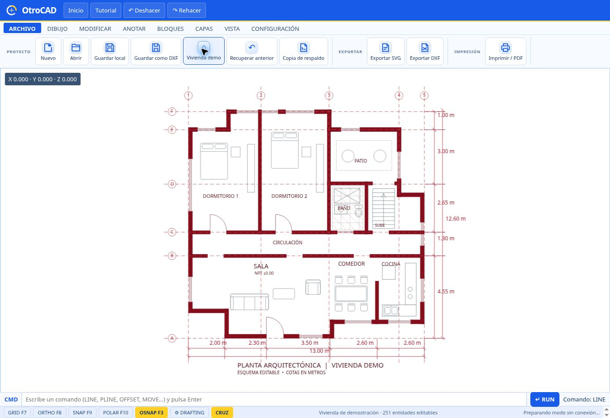

Tu primer dibujo en cinco pasos
¿Es tu primera vez? Empieza con un trazado sencillo y después explora cada especialidad.
- Entra a Abrir editor. El área oscura es el espacio donde dibujarás.
- Abre DIBUJO y elige Línea; en tablet toca primero Herramientas si la barra está oculta.
- Marca el primer punto y mueve el cursor o el dedo hacia el segundo. Usa la entrada de medida cuando aparezca.
- Activa ORTHO para trabajar en dirección horizontal o vertical. Prueba también Medir.
- Abre ARCHIVO → Guardar como… y guarda una copia. Vuelve a abrirla para revisar tu trabajo.
Ubica cada parte de tu espacio
Esta es una captura del editor con una vivienda de ejemplo. La distribución puede variar según el tamaño de pantalla y la versión instalada.

Vista de referencia del editor; las herramientas pueden organizarse de forma distinta en móvil o tablet.
ARCHIVO, DIBUJO, MODIFICAR, ANOTAR, BLOQUES, CAPAS, VISTA y CONFIGURACIÓN organizan el trabajo.
CIVIL 3D, MEP y AIRE ACOND. muestran sus propios grupos y asistentes.
En el centro dibujas; en la zona inferior alternas entre el modelo y la presentación de papel.
La barra CMD recibe comandos; GRID, ORTHO, SNAP, POLAR y OSNAP se encuentran en la parte inferior.
Trabaja en computadora, tablet y teléfono
Utiliza ratón y teclado en el editor web. También hay un instalador Windows experimental disponible en Descargas.
En pantallas táctiles, toca Herramientas para mostrar la barra. Al elegir una herramienta se oculta para ampliar el lienzo; vuelve a pulsar el botón cuando la necesites.
La APK híbrida incluye una copia local del editor. Descarga la versión actual desde Descargas; el modo web y el local utilizan almacenamientos distintos.
En Safari abre el editor, toca Compartir → Añadir a pantalla de inicio. Consulta la guía de instalación para iOS.
Traza, mide y controla tus puntos
Esquema orientativo: define el primer punto, comprueba la medida y marca el siguiente.
- En DIBUJO elige Línea, Polilínea, Rectángulo, Círculo o la figura que necesites.
- Marca los puntos. Para una polilínea, sigue colocando vértices y finaliza con Enter o el botón Finalizar.
- Enciende ORTHO para líneas ortogonales; utiliza OSNAP para buscar referencias geométricas y DRAFTING para ajustar las ayudas.
- Usa Medir entre dos puntos o Área sobre figuras cerradas. Comprueba siempre las unidades y la escala.
Da forma y claridad a tu plano
Escribe M y pulsa Enter; selecciona el objeto por el punto que quieras tomar como base, mueve el cursor y haz clic en el destino. Si seleccionaste el objeto antes de M, primero indica el punto base y luego el destino. Puedes ingresar coordenadas y pulsar Esc para cancelar.
Escribe RE o REGEN y pulsa Enter, o usa VISTA → Regenerar RE. Se vuelve a dibujar la vista sin modificar la geometría ni borrar el plano.
Indica la distancia, selecciona el objeto y señala el lado donde quieres crear la copia paralela.
Usa recorte rápido o selecciona los bordes de corte. La función de corte está implementada para líneas; comprueba el resultado.
Escribe MA, selecciona el objeto de origen y después los destinos. Pulsa Esc para terminar.
Separar una cota de la pared
- En ANOTAR crea la cota entre los puntos que quieres medir.
- Selecciona la cota y localiza su punto de agarre central.
- Arrástralo para mover la línea de cota y separar el texto del elemento. Comprueba que la medida siga correspondiendo a los puntos deseados.
Capas, textos y mobiliario
- En CAPAS organiza los elementos por función, por ejemplo muros, cotas o instalaciones. Ajusta las propiedades disponibles para diferenciar el dibujo.
- En ANOTAR añade texto y cotas. Selecciona un elemento para revisar sus propiedades.
- En BLOQUES → MOBILIARIO elige un símbolo, define el giro y la escala, pulsa Colocar y señala su ubicación.
- Comprueba tamaños y legibilidad antes de exportar o imprimir.
El Arqui IA: de una idea a un anteproyecto
Describe lo que necesitas en palabras. El Arqui interpreta ciertas instrucciones mediante reglas y una biblioteca local; su vista previa es provisional y editable.
«Quiero una casa de 9 por 14 metros, dos dormitorios, dos baños y cocina abierta». Añade terreno, retiros o parqueos solo cuando quieras incluirlos.
- En la pestaña de dibujo, abre El Arqui IA desde su botón o personaje.
- Escribe las dimensiones y espacios que deseas. La vista previa cambia según lo que el motor reconoce mientras escribes.
- Pulsa Proponer / actualizar diseño. Revisa los supuestos y advertencias; abre Ajustar medidas de esta propuesta si necesitas modificarlas.
- Cuando estés conforme, pulsa Dibujar plano completo en CAD. Después puedes editar sus entidades en el editor.
- Para cambiar una propuesta, escribe la modificación y vuelve a revisarla. Al regenerar, confirma el aviso sobre posibles cambios manuales.
Topografía, superficies y señalización
Esquema conceptual de una superficie TIN; la forma depende de los puntos importados.
- Entra en CIVIL 3D. Usa la herramienta de importación de puntos para cargar un TXT o CSV y revisa el orden de columnas y el separador.
- Para datos UTM, identifica correctamente Norte, Este y Cota; revisa la vista previa y las filas descartadas antes de aceptar.
- Con puntos válidos, utiliza las herramientas de superficie TIN y curvas de nivel. Comprueba cotas, forma e intervalo obtenido.
- Para señalización, selecciona una línea o polilínea que servirá de eje, abre la herramienta de señalización, configura la marca y revisa la vista previa antes de Aplicar al plano.
- Abre a Ing. Jaimito en Civil para consultar las opciones disponibles.
MEP, aire acondicionado y cuartos fríos
- En MEP, selecciona el sistema o símbolo disponible y ajusta sus parámetros antes de colocarlo en el plano.
- Para climatización abre AIRE ACOND. y explora ductos, difusores y demás elementos del catálogo.
- En CÁLCULO TÉRMICO elige Climatización HVAC o Cuarto frío / congelación. Completa los datos del espacio y revisa el resultado y sus advertencias.
- Si lo necesitas, utiliza Exportar reporte CSV o Insertar planta 2D en CAD, según la herramienta.
- Abre a Ing. Kelvin desde MEP o aire acondicionado para orientarte en las funciones del módulo.
Tus asistentes en OtroCAD
Modelo, presentación y PDF
- Dibuja y organiza tu trabajo en Modelo.
- Abre Presentación en la barra inferior. Ajusta la configuración de página y vista disponible para tu plano.
- En ARCHIVO → Imprimir / PDF, utiliza el diálogo del dispositivo para imprimir o guardar como PDF.
- Abre el PDF y comprueba tamaño de hoja, escala, textos y posición antes de compartirlo.
Guardar, respaldar y compartir
Usa ARCHIVO → Guardar progreso para crear un punto de recuperación en ese navegador o modo de la aplicación.
Revisa los puntos disponibles y recupera uno anterior si necesitas volver a un estado previo.
Elige nombre y formato entre las opciones disponibles, como proyecto editable, DXF o DWG. Comprueba el archivo resultante.
Exporta un respaldo editable y guárdalo en un lugar seguro. No dependas solo del almacenamiento del navegador.
Abrir un archivo
- En ARCHIVO → Abrir, selecciona el archivo admitido.
- Si aparece un Informe CAD, revisa sus notas de compatibilidad y la representación de los elementos.
- Verifica textos, bloques, cotas, escalas y presentaciones, especialmente en dibujos externos complejos.
Cómo llegan las actualizaciones
Con internet, la aplicación puede detectar recursos nuevos. Si aparece un aviso, guarda primero tu dibujo y recarga. El uso sin conexión depende de que los recursos se hayan preparado antes.
La copia local incluida en la APK no cambia sola al actualizar la web. Para cambiar esa copia se necesita una nueva APK compatible; el botón web abre el editor en línea.
Una práctica para conocer OtroCAD
Dibuja un espacio rectangular, añade una línea interior, una cota y un símbolo de mobiliario. Después guarda y vuelve a abrir tu trabajo.
Las casillas son temporales y se reinician al recargar la página.